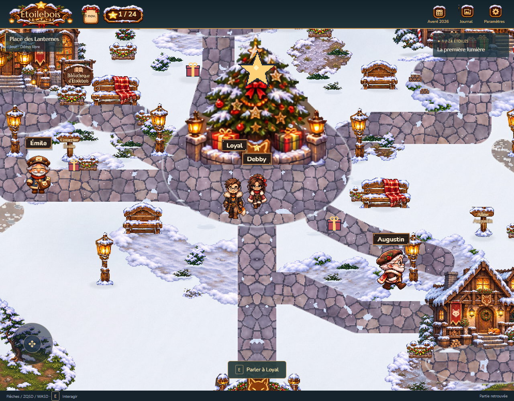
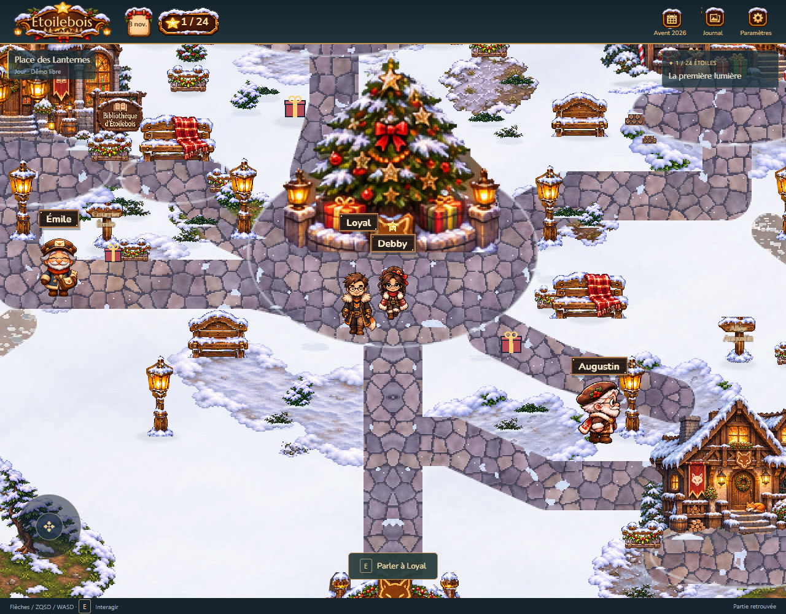
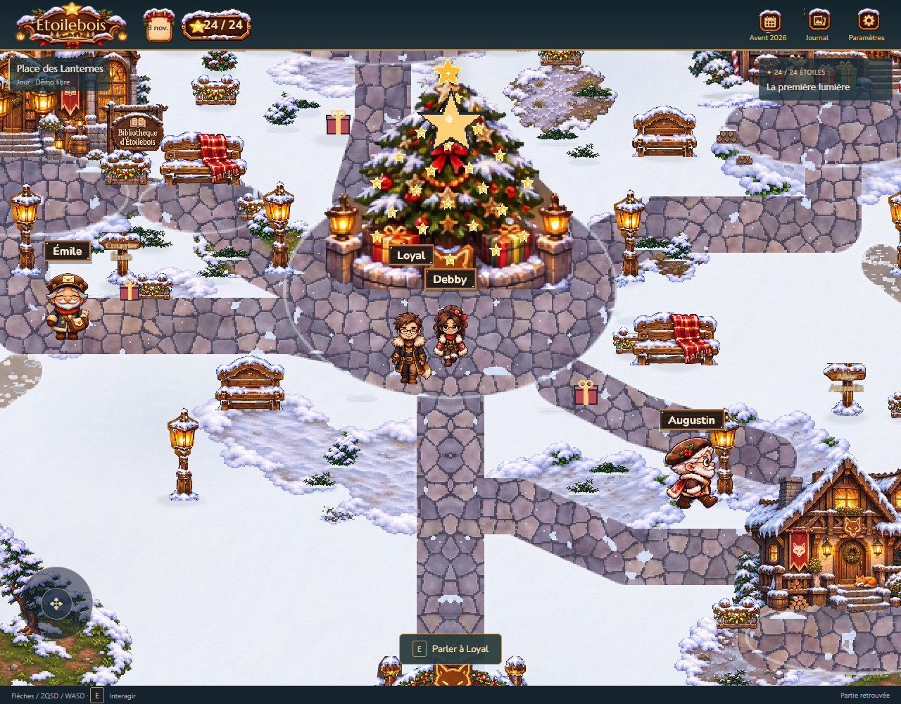

Le sapin retrouve son atlas d'origine
L'atlas sapin_atlas-Etoilebois_Sapin_V11_4 reste inchangé. Seule l'image quest_star placée au-dessus en (512,304) est retirée. Les 24 journées, compteurs, récompenses, sauvegardes et images de progression de l'atlas sont conservés.
Trois images de l'atlas exact — source affichée à ×1
1 étoile — avant / après en jeu

D.3 — étoile superposée
D.3.1 — atlas seul24 étoiles — avant / après en jeu

D.3 — étoile superposéeD.3.1 — atlas seulLe facteur de rendu en jeu reste 0,9, comme dans D.3. Les marqueurs légitimes des activités ailleurs dans le village restent disponibles. Retour à la visite · Audit de conservation